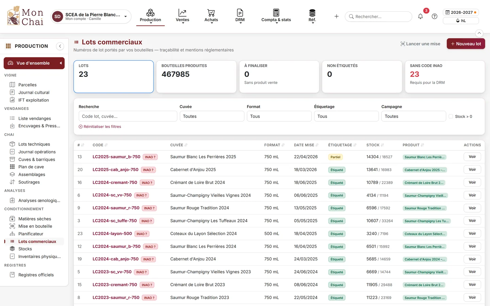

Accueil › Choisir son logiciel viticole
Comment choisir son logiciel viticole
Pour choisir un logiciel viticole, demandez à chaque éditeur de refaire la même opération de votre domaine. Comparez le résultat, les fichiers que vous pouvez récupérer, le coût sur trois ans et les conditions de reprise de vos données.
Voir l’exercice de traçabilité en trois étapes
Le guide complet, 17 pages
Huit thèmes de vérification, une grille de comparaison, treize questions à envoyer aux éditeurs, un modèle de courriel et un lexique.
Télécharger le guide (PDF) Gratuit, sans inscription et sans adresse e-mail à laisser. 0,7 Mo.Les huit points à vérifier
La comparaison commence par les opérations propres au domaine, puis couvre les données, les conditions d'utilisation et la qualité du service. Les mêmes critères doivent être appliqués à chaque solution.
-
Exporter et reprendre ses données
Vérifiez le périmètre des données et documents restitués, les formats proposés, le maintien des liens entre les fichiers, ainsi que le délai et le coût d'une restitution.
-
Vérifier les mesures de sécurité
Recueillez des informations précises sur l'hébergement, les comptes, la double authentification, les sauvegardes, les accès du support et la gestion des incidents.
-
Encadrer les données personnelles
Demandez le contrat de sous-traitance, la liste des prestataires concernés, la localisation des traitements et les conditions de restitution ou de suppression.
-
Vérifier la couverture réglementaire
Pour le registre phytosanitaire, la facturation électronique ou la DRM, distinguez les fonctions disponibles, les développements planifiés et les étapes qui restent à effectuer hors du logiciel.
-
Comparer le coût sur trois ans
Additionnez l'abonnement, les utilisateurs et modules supplémentaires, la reprise de données, la formation, l'assistance et les éventuels frais de sortie.
-
Lire les conditions de sortie
Relevez la durée d'engagement, le renouvellement, le préavis, l'accès après résiliation et le calendrier de restitution puis de suppression des données.
-
Évaluer le support et l'éditeur
Comparez les horaires, les canaux, les délais de réponse et le dispositif prévu pendant les vendanges. Examinez aussi l'organisation et la continuité du service.
-
Organiser un essai représentatif
Préparez quelques scénarios à partir d'un échantillon de vos données, avec les personnes qui utiliseront le logiciel et dans les conditions de connexion du domaine.
Tester un logiciel viticole sur un lot, de la cuve à la vente
Prenez le même cas pour chaque éditeur. Dans cet exercice fictif, vous partez de 300 L de vin en cuve, vous mettez 392 bouteilles de 75 cl en stock, puis vous en expédiez 24.
-
Retrouver le vin en cuve
Préparez une fiche de cuvée, une cuve et le numéro du lot de vin en vrac. Demandez à retrouver le millésime, le volume et l’historique du lot depuis l’écran utilisé au chai.
À vérifier Le lot, le contenant et les 300 L sont identifiables dans l’historique.
-
Enregistrer la mise
Déclarez 392 bouteilles de 75 cl, soit 294 L. Demandez comment les 6 L d’écart sont expliqués dans l’opération, par exemple un reste en cuve ou une perte enregistrée.
À vérifier Le numéro de lot bouteille permet de retrouver la mise et le lot de vin d’origine.
-
Suivre la sortie des 24 bouteilles
Préparez une commande test, enregistrez la sortie et revenez à l’écran des stocks. Demandez un export qui permet de relire le mouvement sans ouvrir le logiciel.
À vérifier Il reste 368 bouteilles après la sortie si aucun autre mouvement n’a été saisi. Le mouvement reste rattaché au bon lot.

Trois vérifications à intégrer au rendez-vous
Ces questions permettent d'obtenir des éléments faciles à reporter dans la grille et à confirmer par écrit.
« À quelle date remonte votre dernière restauration de sauvegarde testée ? »
La fréquence des sauvegardes et les tests de restauration sont deux informations distinctes.« Puis-je voir un export réel du registre phytosanitaire au format exigible en 2027 ? »
Un fichier d'exemple permet de vérifier les champs, le format et les corrections possibles.« Que deviennent mes données à la fin du contrat, et sous quel délai ? »
La réponse doit préciser les formats, les délais, le coût et la date de suppression.Ce que contient le guide
- Huit thèmes de vérification, avec les informations à recueillir et les points à faire préciser.
- Une grille de comparaison à imprimer et à remplir pendant les rendez-vous, pour trois éditeurs.
- Les treize questions à envoyer, et un modèle de courriel prêt à copier.
- Un lexique : DRM, DTI+, AMM, IFT, plateforme de dématérialisation, réversibilité, sous-traitant.
- Les échéances réglementaires 2026 et 2027 qui pèsent sur le choix.
À propos de l'éditeur du guide
Ce guide est publié par Mon Chai, éditeur d'un logiciel de gestion viticole. Il présente une méthode de consultation et ne remplace ni les documents contractuels ni la vérification des obligations propres à chaque domaine.
Les treize questions peuvent aussi nous être adressées. À la date de cette édition, les exports CSV et PDF sont disponibles depuis le logiciel sans facturation supplémentaire, les données sont hébergées en France, l'abonnement est mensuel et sans engagement, et l'essai ne nécessite pas de carte bancaire.
Emportez le guide
17 pages à consulter, imprimer et compléter pendant vos rendez-vous.
Télécharger le guide (PDF) Reproduction et diffusion libres, à condition de ne pas le modifier.Besoin d'une information sur Mon Chai ?
Envoyez-nous la liste de questions ou testez l'export à partir d'un compte d'essai.